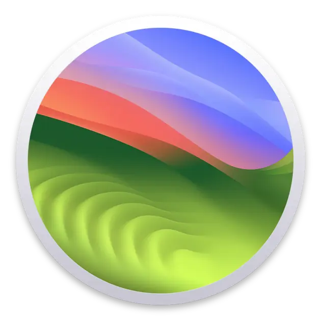
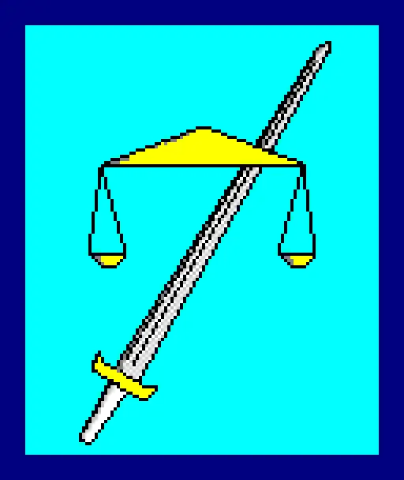
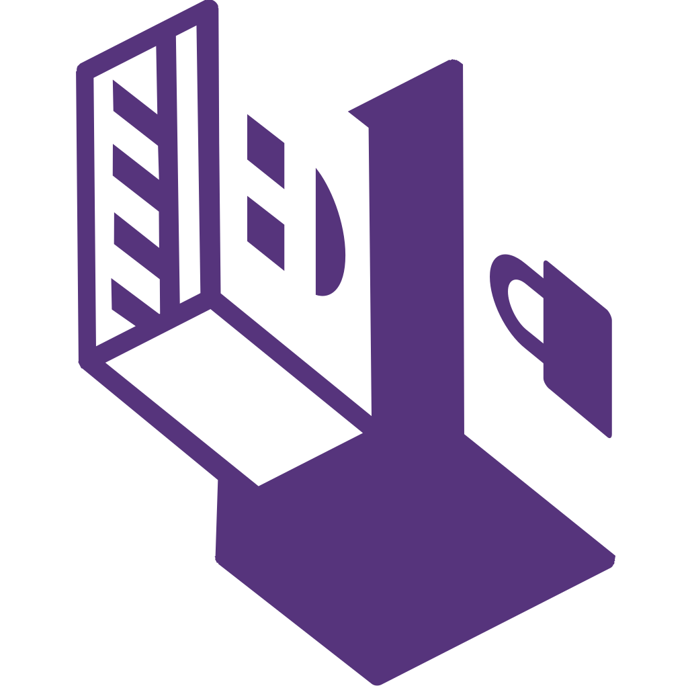

Windows 11 IoT
Enterprise LTSC 24H2
Windows 11 LTS
минимальный
Windows 10 IoT
Enterprise LTSC 2021
Windows 10 LTS
минимальный
Windows 7 Ultimate
Windows 7
полный

macOS 14 Sonoma
Операционная
система для Mac
Artix
Система Arch
без systemd
Refracta
Форк Devuan, форк
Дебиана без systemd
Gentoo
Самокомпилируемая
система Linux
OpenBSD
Операционная система
подобная Unix,
основанная на BSD

TempleOS
Операционная система,
написанная на
языке HolyC
FreeDOS
Операционная
система DOS

Tails
Система с
амнезией
QubesOS
Изолированная система
Linux для
различных действий